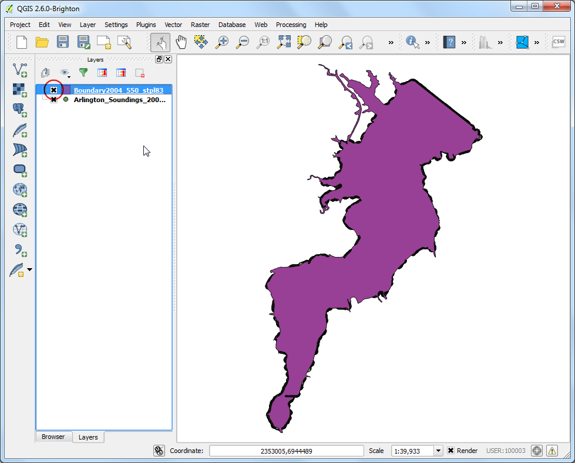
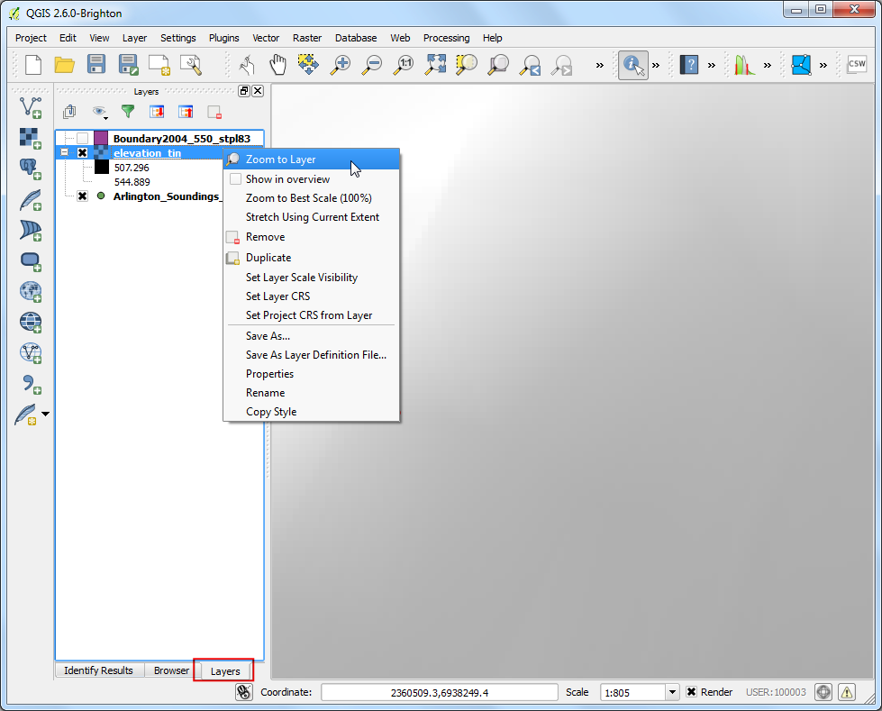
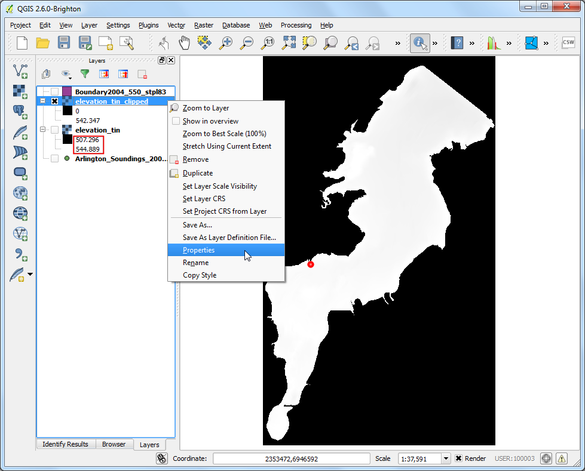

Nội suy dữ liệu dạng điểm
Nội suy là một kỹ thuật GIS được sử dụng rộng rãi trong việc tạo lập bề mặt phẳng từ các điểm rời rạc. Một số hiện tượng thực tế có tính liên tục như - độ cao địa hình, thổ nhưỡng, nhiệt độ, v.v... Nếu muốn mô phỏng các bề mặt này để phân tích, việc đo đạc trực tiếp trên bề mặt là không thể. Do đó, các đo đạc thực địa được thực hiện ở nhiều điểm khác nhau trên bề mặt và các giá trị trung gian được tạo ra bởi quá trình nội suy. Trong QGIS, nội suy được thực hiện bằng công cụ được tích hợp sẵn Interpolation plugin.
Tổng quan về nhiệm vụ
Chúng ta sẽ tiến hành đo đạc độ sâu của hồ Arlington ở bang Texas và tạo bản đồ có độ cao địa hình cùng các đường bình độ từ việc đo đạc đó.
Các kỹ năng bạn sẽ học được
Tạo đường bình độ từ dữ liệu điểm.
Làm mặt nạ vùng không có dữ liệu ‘no-data’ từ lớp raster.
Tạo thêm nhãn cho lớp vector.
Các bước thực hiện
Mở QGIS. Vào

Tìm tới file Shapefiles.zip đã tải xuống và chọn.. Bấm Open.

Trong Select layers to add... dialog, giữ nút Shift và chọn Arlington_Soundings_2007_stpl83.shp và lớp Boundary2004_550_stpl83.shp. Bấm OK.

- You will see the 2 layers loaded in QGIS. The
Boundary2004_550_stpl83
layer represents the boundary of the lake. Un-check the box next to it in
the Table of Contents.

- This will reveal the data from the second layer
Arlington_Soundings_2007_stpl83. Though the data looks like lines, it is
a series of points that are very close.

- Click the Zoom icon and select a small area on the screen. As
you zoom closer, you will see the points. Each point represents a reading
taken by a Depth Sounder at the location recorded by a DGPS equipment.

- Select the Identify tool and click on a point. You will see the
Identify Results panel show up on the left with the attribute
value of the point. In this case, the
ELEVATION attribute contains the
depth of the lake at the location. As our task is to create a depth profile
and elevation contours, we will use this values as input for the
interpolation.

- Make sure you have the
Interpolation plugin enabled. See
Using Plugins for how to enable plugins. Once enabled, go to
.

- In the Interpolation dialog, select
Arlington_Soundings_2007_stpl83 as the Vector layers in the
Input panel. Select ELEVATION as the
Interpolation attribute. Click Add. Change the
Cellsize X and Cellsize Y values to 5. This
value is the size of each pixel in the output grid. Since our source data is
in a projected CRS with Feet-US as units, based on our selection, the
grid size will be 5 feet. Click on the ... button next to
Output file and name the output file as elevation_tin.tif.
CLick OK.
Ghi chú
Interpolation results can vary significantly based on the method and
parameters you choose. QGIS interpolation supports Triagulated Irregular
Network (TIN) and Inverse Distance Weighting (IDW) methods for interpolation.
TIN method is commonly used for elevation data whereas IDW method is used
for interpolating other types of data such as mineral concentrations,
populations etc. See the Spatial Analysis
module of the QGIS documentation for more details.

Bạn sẽ thấy lớp elevation_tin mới được mở trong QGIS. Bấm chuột phải vào tên lớp và lựa chọn Zoom to layer.

- Now you will see the full extent of the created surface. Interpolation does
not give accurate results outside the collection area. Let’s clip the
resulting surface with the lake boundary. Go to .

- Name the Output file as
elevation_tin_clipped.tif. Select the
Cliiped mode as Mask layer. Select
Boundary2004_550_stpl83 as the Mask layer`. Click
OK.

- A new raster
elevation_tin_clipped will be loaded in QGIS. We will now
style this layer to show the difference in elevations. Note the min and max
elevation values from the elevation_tin layer. Right-click the
elevation_tin_clipped layer and select Properties.

- Go to the Style tab. Select Render type as
Singleband pseudocolor. In the Generate new color map
panel, select Spectral color ramp. As we want to create a depth-map as
opposed to a height-map, check the Invert box. This will assign
blues to deep areas and reds to shallow areas. Click Classify.

- Switch to the Tranparency tab. We want to remove the
black-pixels from our output. Enter
0 as the Additional no
data value. Click OK.

- Now you have a elevation relief map for the lake generated from the
individual depth readings. Let’s generate contours now. Go to
.

- In the Contour dialog, enter
contours as the
Output file for contour lines. We will generate contour lines
at 5ft intervals, so enter 5.00 as the Interval between
contour lines. Check the Attribute name box. Click
OK.

- The contour lines will be loaded as
contours layer once the processing
is finished. Right-click the layer and select Properties.

Tìm tới thanh Labels. Chọn hộp Label this layer with và lựa chọn trường ELEV. Chọn Curved là loại Placement và bấm OK.

- You will see that each contour line will be appropriately labeled with the
elevation along the line.